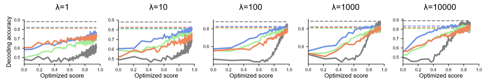

Differentiable Optimization of Similarity Scores Between Models and Brains
1MIT BCS
2NYU
3HIH Tübingen
Introduction
How do we know if two systems – biological or artificial – process information in a similar way? Similarity measures such as linear regression, Centered Kernel Alignment (CKA), Normalized Bures Similarity (NBS), and angular Procrustes distance, are often used to quantify this similarity. However, it is currently unclear what drives high similarity scores and even what constitutes a “good” score. Here, we introduce a novel tool to investigate these questions by differentiating through similarity measures to directly maximize the score.
To evaluate the similarity of representations between two systems, we extract feature representations such as activity in a brain area or model layer in response to some sample stimuli. Our objective is to quantify the alignment between these representations using a similarity score. We define a scoring function score(X, Y) as a measure that increases with similarity, achieving a maximum of 1 when X = Y.
Optimization of similarity scores
We identify what drives high similarity scores by differentiating through similarity measures to directly maximize the score. Given a target dataset X, for example a neural dataset, we initialize a synthetic dataset Y by randomly sampling from a standard Gaussian distribution with the same shape as X. We optimize Y to maximize the similarity score with X, leveraging the differentiability of the similarity measures.
We visualize the optimization process for a few similarity measures below. The dataset on the left is the reference dataset X, and the datasets on the right are the synthetic datasets Y for different similarity measures.
Reference
Ridge Regression
CKA

Angular Procrustes

We also evaluate how each principal component (PC) of the reference dataset X is captured as Y is optimized for similarity. What do we learn? CKA can be near its maximum value even when only the first principal component is captured.
In the paper, we present theoretical analyses to explain these results. In particular, we mathematically derive the sensitivity of CKA, angular Procrustes, and Normalized Bures Similarity to the variance of principal component dimensions, and explain the dependence CKA shows to high variance components.
What is a good similarity score?
Our approach to address this question is to examine, across five neural datasets, the similarity score required for a synthetic dataset to encode task relevant information to the same degree as the neural data.
What is a good value for a similarity score? There is no absolute answer! An angular Procrustes score above 0.5 may constitute a good score for the Mante 2013 dataset but a score above 0.8 is required for the Siegel 2015 dataset. And this also depends on the similarity measure.
Another crucial point to make with the figure above is that high similarity scores near the maximum value of 1, particularly for CKA and unregularized linear regression without cross-validation, do not guarantee that models encode task-relevant information in a manner consistent with neural data, i.e. the CKA and linear regression curves in the Siegel 2015 dataset do not approach the horizontal line showing the decode accuracy for the neural data. There may be important features in a dataset that are not captured by a model even when the model-data similarity score is high.
Ridge Regression
Let's take a closer look at ridge regression scores, examining how they change as we vary the regularization strength λ.
This figure highlights that for linear regression methods, including those that are cross-validated and regularized, a high similarity score does not always guarantee that task-relevant information is encoded in a manner consistent with the neural data. In other words, high similarity scores can be achieved without fully capturing the important features of the neural representations.
This underscores the need for caution when interpreting similarity scores, especially in the context of comparing artificial and biological neural representations. It suggests that while similarity measures like ridge regression are useful tools, they should be used in conjunction with other analyses to ensure a comprehensive understanding of how well a model captures the key aspects of neural data.
Are metrics mutually independent?
A natural question that arises is whether different similarity metrics are independent of each other, or if they exhibit consistent relationships. To address this, we consider three possible relationships between any two given similarity metrics:
- Independent: A high score on one metric does not guarantee a high score on the other.
- Coupled: A high score on one metric implies a high score on the other, and vice versa.
- Asymmetric: A high score on the first metric guarantees a high score on the second, but not the other way around.
We characterize the allowable range of scores between two different similarity measures by jointly optimizing their scores.
The figure above shows that a high angular Procrustes similarity implies a high CKA score, but not the converse. A high value of angular Procrustes implies a high score for unregularized linear regression but linear regression that is regularized and cross-validated across experimental conditions can take independent values.
Standardizing similarity measures
We are also developing a Python package to make it easier to compare similarity measures across studies. We currently have around 100 different similarity measures from 14 papers registered and standardized to a common interface.